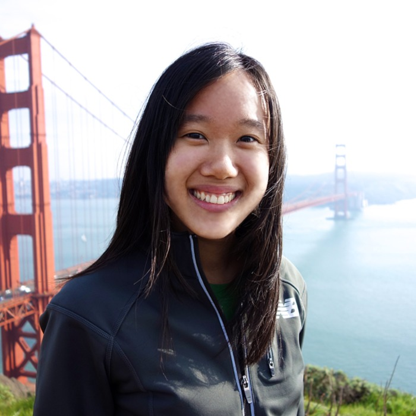
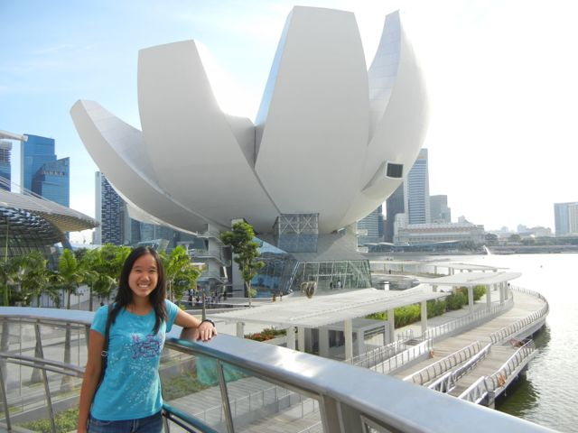
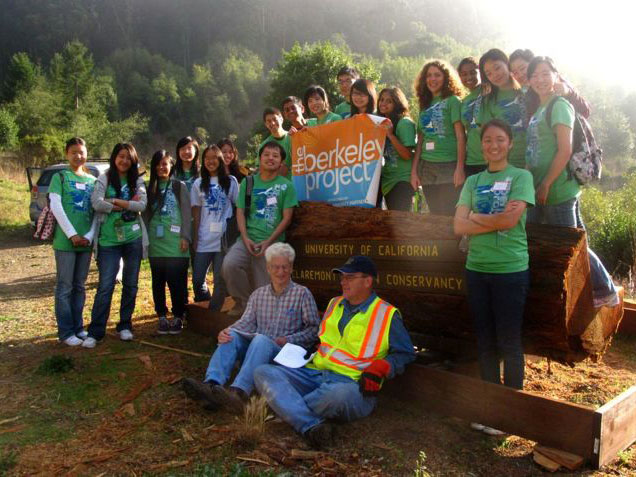
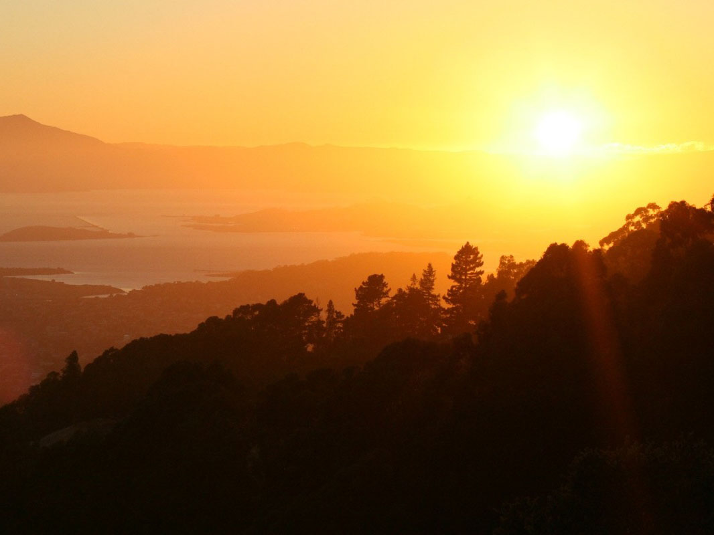
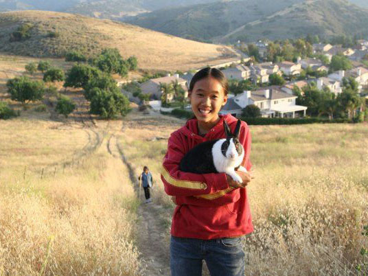
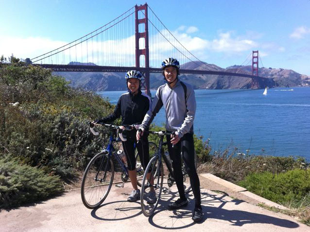
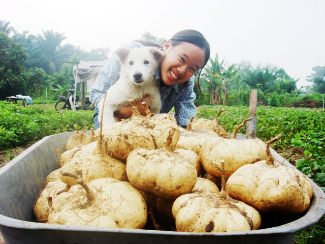

Carina Boo
About Me
I'm a 3rd year undergrad majoring in Computer Science.
I'm a design and tech fanatic. I enjoy designing useful, delightful web applications. Soon I'll be building them too! I also really like teaching--used to tutor writing at the SLC, taught a Bicycle Repair DeCal, and did web design workshops.
I work part-time as a web designer at ResComp here on campus and as a User Experience Designer at Marketo, a startup in San Mateo.
I'm an avid cyclist, really enjoy doing outdoorsy things (hiking, kayaking, scuba diving!), and love traveling.
Some of My Favorite Things

Traveling
I traveled in Malaysia, Thailand, Signapore, and Japan in summer 2011. This shot was in front of The Welcoming Hand of Singapore.

Community Projects
I like to get involved in the community. This was last year's Berkeley Project where we helped install steps and clean up a hiking trail.

Photography
Photography! Most of my shots are of nature and landspaces, but I also enjoy taking pictures of people at events.

Hiking
I love going on hikes and enjoying the fresh air and scenery. Sometimes I'd take my bunny on my adventures as well.

Biking
Bikes are so convinient to get to anywhere around the bay, and they're a thrill to ride. My brothers and I ride together a lot.

Gardening
I love watching plants grow. Eating delicious, fresh fruits and vegetables is great plus as well. This was at grandparents' farm in Malaysia.